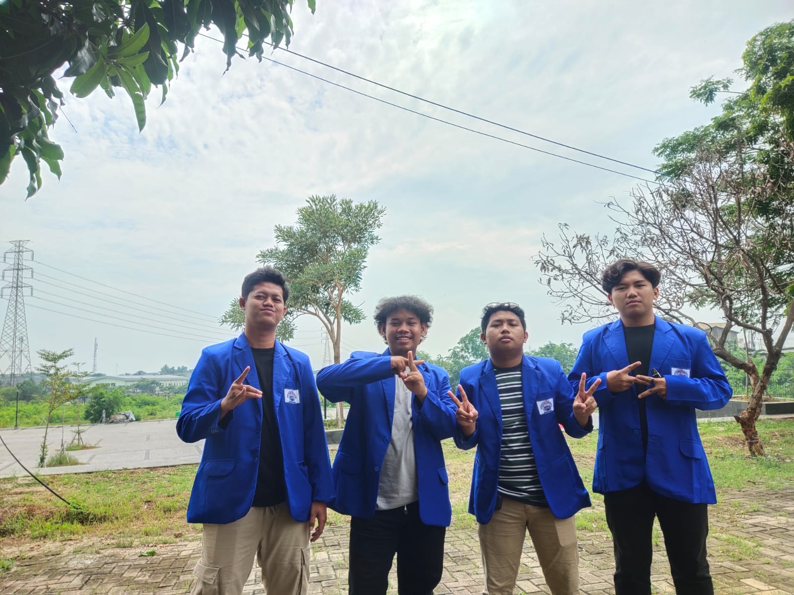
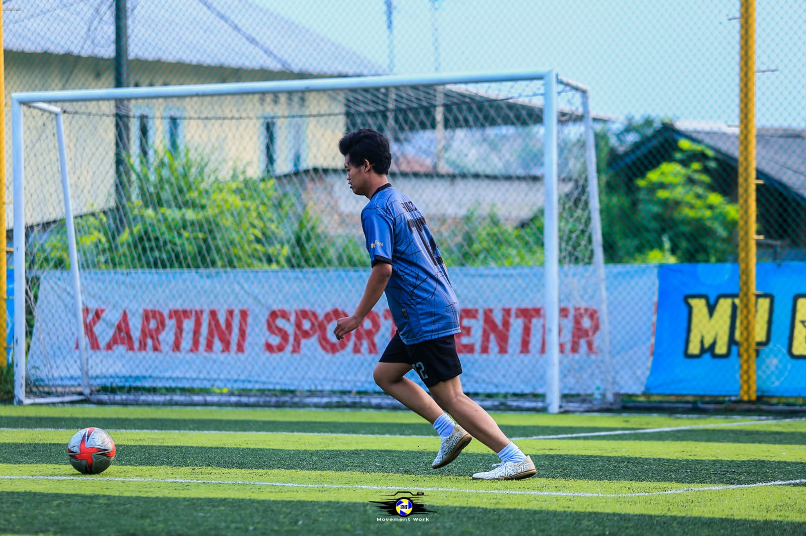

Kegiatan Hafidza
|  |
Selesai UAS Semester 3 Pada hari terakhir UAS semester 3 Setelah semua hasil ujian telah diproses, mahasiswa dan dosen dapat mulai mempersiapkan diri untuk semester berikutnya,Kegiatan selesai ulangan akhir semester adalah bagian penting dari siklus akademis yang membantu dalam mengevaluasi pencapaian siswa, memberikan umpan balik, dan merencanakan langkah selanjutnya dalam proses pembelajaran. |
|  |
Olahraga Mahasiswa yang gemar bermain bola seringkali memiliki minat yang kuat dalam olahraga tersebut dan melihatnya sebagai cara untuk melepaskan stres, menjaga kesehatan, serta memperluas jejaring sosial |